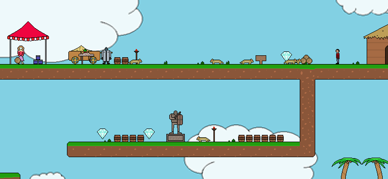

Demon's Field
DateMarch 2015
RoleSolo Project
TechnologiesGML, GameMaker
DescriptionThe village is under attack from waves of monsters! Help to defend the village from increasing difficulties of waves, or take on some of Yael's and Shady's missions instead. There are a variety of monsters to defeat as you explore the map of plains, forests, snow, lava and more...

Features
- Unlimited waves of increasing difficulty
- Two branches of side quests from Yael and Shady
- Achievements
- End-game statistics
- Random diamond and enemy spawning
- Several unique weapons
Questions
Click the image to download the game. Sadly, due to the way it was developed, you will only be able to play if you are running a Windows OS.
All instructions are in the game. Press 'P' to pause or unpause the game which allows you to check the controls.
The main objective is to defend your hut from the various enemies. You can also complete side missions from Yael and Shady, explore the map or aim to win all 12 achievements. There is a lot to do!
Below the village is a statue, use the action key on it to check your achievements.
In between waves use a rope to get up to the geysers to collect water bombs, it is much quicker than collecting coconuts. Stack up on weapons and unleash them at anything that moves.
Wave 6. Everything was going perfect until after wave 5 when I kept dying so did not have time to collect enough weapons. I could do better and theoretically wave 10 is possible to complete, but I'll be impressed if anyone can do it.
Shhhhh! Don't tell anyone...
Yael is the village doctor who heals you and hands out random missions. She is based on my friend who, by a strange coincience, also happens to be called Yael. Shady is the hidden warrior who offers a series of story-based missions, I thought of his name while listening to a certain 'slim' rapper although this character is not actually based on anyone.
Shady has 11 quests, the final one has both a big surprise and a big reward. Shady's quests are challenging but rewarding, can you complete them?
Updating Demon's Field is something I want to do but I am already working on a few projects. Adding more monsters, environmental objects and items is something I hope to do in the future.
The AI is based on random numbers and heuristics. Enemies will try to chase and attack you if nearby (as any enemy should) but will use random numbers to determine movement, which also contains a few rules. A jumping Gimel also has extra rules to determine where and when to jump, but will generally try to jump to higher ground.